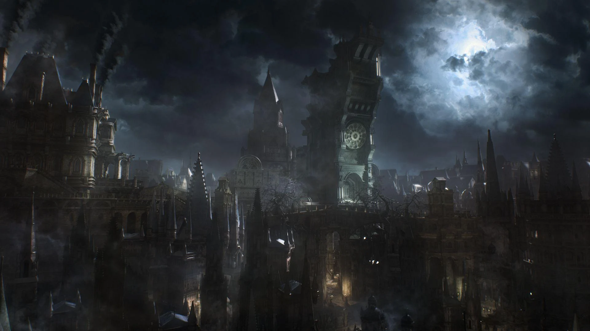
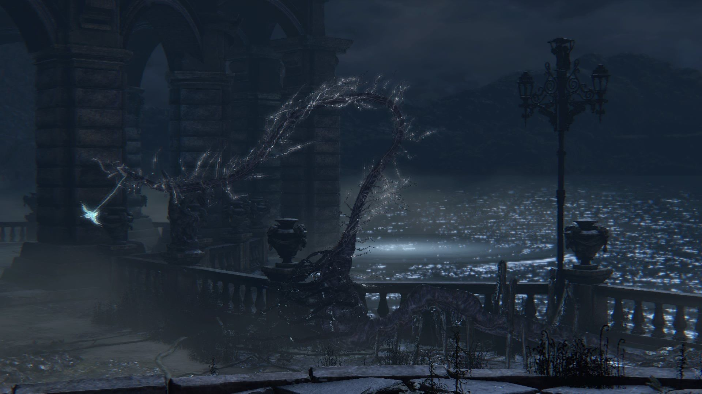
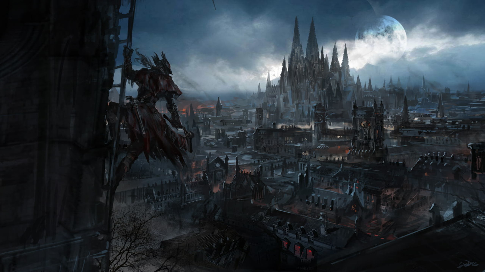
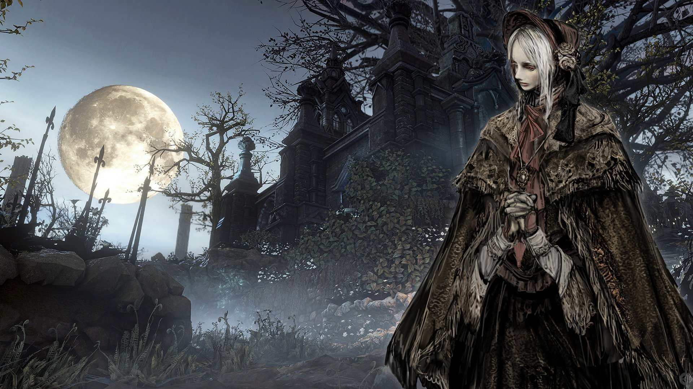
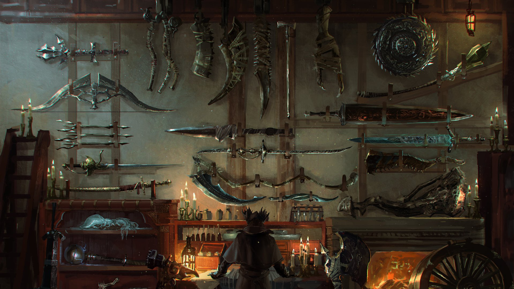
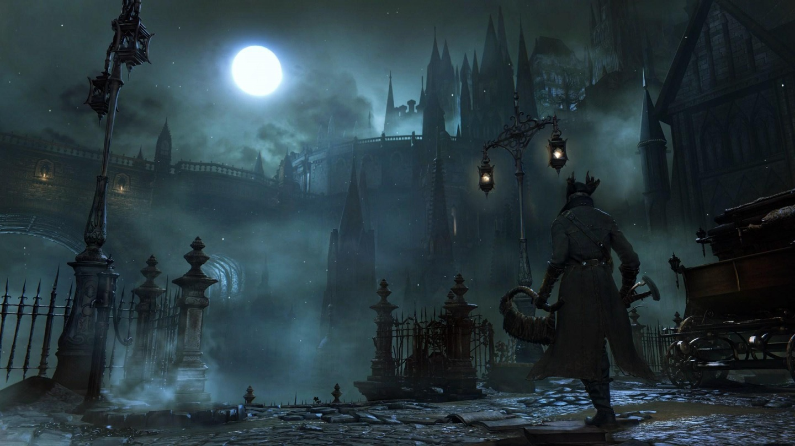
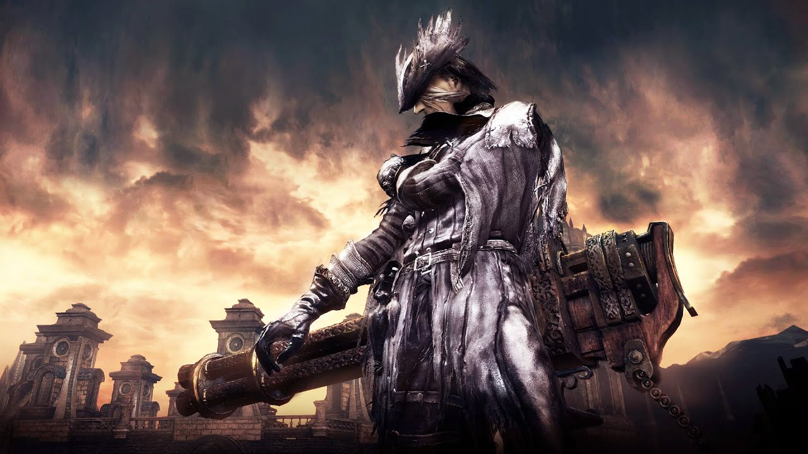
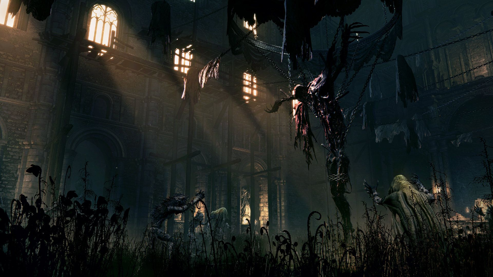

Los cimientos: Byrgenwerth, los Escolares y la Antigua Sangre
“Byrgenwerth es un antiguo lugar de aprendizaje. Y la tumba de los
Dioses, tallada bajo Yharnam, debería ser familiar para cualquier
cazador. La historia comienza cuando un grupo de jóvenes escolares
de Byrgenwerth descubren un medio sagrado en lo más profundo de la
tumba. Esto llevó a la fundación de la Iglesia de la Sanación y a
establecer la curación de sangre. En este sentido, todo lo sagrado
en Yharnam puede remontarse a Byrgenwerth”. – Alfred, Cazador de los
Sangrevil.
Tratar toda la historia previa a Yharnam sería una tarea colosal y
nos derivaría de nuestro objetivo. Aun así, creemos imprescindible
nombrar a los Escolares que estudiaron en Byrgenwerth y realizaron
el gran hallazgo que puso en marcha todo el argumento de Bloodborne.
Los más relevantes de estos Escolares iniciales fueron el grupo
formado por el Maestro Willem (líder de la academia), Laurence (el
primer vicario), Caryll (la maestra en el crafteo de runas) y
Micolash (que encontramos en la pesadilla de Mensis). Aparte de los
cuatro también hay indicaciones de que dos Escolares más tuvieron un
papel muy importante en los inicios: Gehrman (el primer cazador) y
Lady Maria (mejor pupila de Gehrman que custodia el área de estudio
de la Iglesia de la sanación).


El momento decisivo llegó cuando todos ellos descubrieron el
misterio que se ocultaba bajo las piedras de las criptas de
Pthuemerian: La Antigua Sangre de Los Grandes que confirmaba la
existencia de los mismos. Tras este gran hallazgo los objetivos de
los Escolares cambiaron y tuvieron como principal objetivo la
evolución, empujando los límites de la humanidad para alcanzar un
estado mayor. Con tal de alcanzar ese plano elevado de conocimiento
los Escolares se dividieron en dos grupos, ya que unos creían que lo
lograrían mediante el estudio y uso de la Antigua Sangre
(representada en el juego con los Ecos de sangre que recogemos) y
los otros mantenían que el conocimiento se lograría con la Lucidez.
En el primer grupo, que podrían llamarse los Revolucionarios, fueron
liderados por Laurence, acompañado de Micolash, Gehrman y Maria,
creyendo en el poder otorgado por la Sangre. Por otro lado, los
estudiantes leales al Maestro Willem creyeron que el conocimiento
expresado por los Ojos les llevaría a comprender los planos
superiores en los que se hallaban Los Grandes y eso les permitiría
elevar a la humanidad a ellos.
Con tal de reservar información relevante para futuros textos y de
apresurar nuestra llegada a Yharnam, hacemos un salto importante
hasta nuestro despertar, dejando por el camino a Kos, Rom y la
interesante Aldea Pesquera.
El Despertar y Iosefka
“Oh, sí…sangre pálida. Bien, has venido al lugar apropiado. Yharnam
es el lugar del transvase de sangre. Solo debes desentrañar su
misterio. ¿Cómo debe empezar una extranjera como tú? Fácil, con un
poco de sangre de Yharnam propia…Antes necesitarás un contrato.
Bien, todo sellado y firmado. Y ahora comencemos la transfusión. Oh,
no te preocupes. Pase lo que pase…creerás que solo ha sido un mal
sueño…”.
Tras un recibimiento inicial nos despertamos en la clínica,
recibiendo la transfusión de sangre que cure la misteriosa
enfermedad que portábamos con nosotros desde tierras lejanas, motivo
por el que acudimos a Yharnam. Es sabido que al descubrir la Antigua
Sangre de los Grandes los Escolares hicieron algo más que
estudiarla. La utilizaron, mediante transfusiones de sangre
orquestadas por la Iglesia de la Sanación, ya que sus propiedades
superiores parecían poder curar toda la enfermedad que los sujetos
padecieran. Lo que no predijeron en un primer momento fueron las
consecuencias de estas cada vez más comunes transfusiones…¿o tal vez
sí y por ello utilizaron a los habitantes de Yharnam como sujetos
involuntarios de pruebas?.


Volviendo a la camilla donde nos encontramos, sin tener conocimiento
todavía de la historia de la peligrosa ciudad en la que nos hemos
adentrado, abrimos los ojos para descubrir que volvemos a estar
solos, pero por poco tiempo. Una bestia con forma licántropa surge a
partir de un gorgoteo de sangre habido en las tablas de madera del
suelo y se aproxima con las garras en alto. Al estar lo
suficientemente cerca de nuestro cuerpo empieza a arder, ya que la
sangre de Yharnam que está fluyendo por nuestras venas, sustituyendo
la nuestra, extranjera, nos protege del mal momentáneamente. ¿O tal
vez tienen algo que ver los pálidos y monstruosos pequeños
mensajeros que trepan por nuestro cuerpo hasta cubrir todo lo que
alcanza a ver nuestra vista?.
“Ah, habéis encontrado una cazadora…”. Con estas palabras
pronunciadas por una voz femenina despertamos en El sueño del
cazador. Una gran luna llena, lápidas, flores blancas y un taller en
lo alto de unas escaleras descansan plácidamente. Ah, y una muñeca…
Nos levantamos, físicamente y en el mundo de la vigilia, tras tocar
una lápida para encontrar de nuevo la clínica de Iosefka. Al subir
las escaleras a nuestras espaldas nos encontramos a la propia
doctora a través de una puerta cerrada: “¿Has…salido de caza?
Entonces lo siento mucho, pero… no puedo abrir esta puerta. Soy
Iosefka. No puedo exponer a los pacientes de mi clínica a la
infección. Sé que cazas para nosotros, para nuestro pueblo, pero lo
siento. Por favor, es todo lo que puedo hacer (nos entrega un vial
de su sangre). Ahora vete. Y buena cacería”. La próxima vez que la
volvamos a encontrar la doctora ya no será la misma…aunque esa es
una historia para otro día.
Estamos solos y al salir del edificio nos adentramos en la oscura
ciudad de Yharnam. Con un estilo arquitectónico gótico y victoriano
repleto de catedrales, iglesias y capillas que fue creado a partir
de la inspiración que Miyazaki y su equipo obtuvieron de ciudades
como Rumanía y la República Checa. La capilla de Oedon recuerda a la
Catedral de Aquisgrán, las tumbas amontonadas en los rincones del
Paso del Osario de Hemwick forman una estampa similar al cementerio
judío de Praga y otras localizaciones reales como la Iglesia Negra
de Brasov o la de San Lorenzo (Nuremberg) inspiran a las
localizaciones halladas en Yharnam, con un toque más oscuro y
tétrico.


Apenas tenemos tiempo de apreciar la arquitectura, ya que los
habitantes malditos y las bestias patrullan por las calles con un
rumbo fijo y cíclico y la única misión de matarnos e impedir que
realicemos nuestra misión. Ataúdes, fuego y estatuas de piedra,
enredaderas y rejas de pinchos se combinan con la ciudad de forma
caótica e incómoda, creando caminos laberínticos y trampas en todos
los rincones de Yharnam.
Entre enemigos y muerte encontramos algunas voces humanas que
permanecen en sus hogares sobreviviendo a la cacería. La voz de una
pequeña niña se cuela a través de la ventana para pedirnos que
busquemos a su madre. Nos entrega una caja de música y explica: "Mi
madre lleva un broche rojo con una joya. Es muy grande...y bonito,
no pasa desapercibido. Si la encuentras dale esta caja de música.
Suena una de las canciones favoritas de papi. Y cuando papi se
olvida de nosotras, la tocamos para que se acuerde. Mami es tan
despistada...¡mira que irse sin ella!". Posteriormente encontramos a
otro cazador, el padre Gascoigne, pero no se trata de un aliado.
Tras vencerlo encontraremos un cadáver de una mujer en la zona...con
un broche rojo. Si reproducimos la caja de música durante el
combate, el cazador enemigo se echará las manos a la cabeza y
gritará de dolor por recordar lo que hizo.
La Iglesia de la Sanación y el Viejo Yharnam
“Si estás interesada en la sangre, deberías probar con la Iglesia de
la Sanación. La Iglesia controla todo el conocimiento en la
transfusión de sangre y sobre todos los tipos de sangre. Cruzando el
valle hasta el Este de Yhanam descansa la ciudad de la Iglesia de la
Sanación, conocida como el Distrito de la Catedral. Y en sus
profundidades está la Antigua Catedral (…) el lugar de nacimiento de
la sangre especial de la Iglesia de la Sanación, o eso dicen. Los
habitantes de Yharnam no comparten demasiado con los forasteros.
Normalmente no te dejarían acercarte a este lugar pero…La Caza es
esta noche. Esta podría ser tu oportunidad” – Gilbert.
Una voz humana que se cuela a través de una ventana de uno de los
pocos edificios que permanecen como refugios, a los cuales nadie nos
abrirá las puertas, nos da un objetivo real: alcanzar la Iglesia de
la Sanación para tratar de obtener respuestas. Esta institución
sirve de ancla y estructura para toda Yharnam, liderados en un
inicio por el primer Vicario Laurence y encargados de realizar las
transfusiones de sangre a la población a partir de la Antigua Sangre
obtenida de El Grande (se cree que concretamente de Ebrietas) que
los Escolares encontraron tiempo atrás en Byrgenwerth.


Al extenderse la noticia de que tal sangre podía curar cualquier
enfermedad, cada vez más ciudadanos de Yharnam acudían a la Iglesia
para obtener una transfusión. Pero lo que no sabían era que la
sangre estaba maldita y con ello llegó el Azote de la Bestia, que
convirtió a muchos portadores de la maldición en los terribles
monstruos que ahora asesinamos sin piedad. Porque es nuestro nuevo
trabajo aquí en Yharnam, como cazadores y cazadoras. Guerreros y
guerreras de élite mandados por la Iglesia y comandados por Gehrman,
quién fundó la orden tiempo atrás y que ahora conocemos en el taller
del sueño del cazador, para acabar de forma sigilosa con todas las
personas que se habían transformado en bestias y así evitar que se
extendiera el caos. Todo para evitar que se dieran cuenta de que la
sangre que les estaba siendo administrada les convertía en
monstruos. Al menos fue el plan en un inicio, en los primeros
tiempos en los que el número de infectados no era tan elevado, hasta
que todo cambió con los hechos ocurridos en el Viejo Yharnam.
“Viejo Yharnam, quemado y abandonado por la gente, ahora es tan solo
el hogar de las bestias. No harán daño a nadie de arriba. Da media
vuelta…o la cazadora se enfrentará a la caza” – Djura, cazador
retirado.
Las transfusiones de sangre se estaban usando en exceso y por ello
cada vez había más monstruos y más cazadores necesarios para acabar
con ellos. Con el nuevo mandato de Ludwig incluso se armó a los
ciudadanos, levantando así a cazadores inexpertos que morían a manos
de las bestias o se acababan convirtiendo en ellas por la sangre que
portaban. Un círculo vicioso que acabó por desvelar el secreto de
las cacerías nocturnas.
La gente entró en pánico, pero ya era demasiado tarde para escapar,
pues la sangre maldita corría por sus venas. La Antigua Yharnam y
sus habitantes, monstruos y humanos, tuvieron que arder y con ella
surgió la Yharnam que visitamos y por la que tratamos de avanzar.
Por su estado y la cantidad de seres malditos que nos encontramos
sabemos que no está en mejores condiciones de las que encontró la
Antigua ciudad antes de ser reducida a cenizas.
TEME A LA VIEJA SANGRE
“En Yharnam la sangre fluye como el agua. No encontrarás bares en la
ciudad, ni pubs o tabernas. Solo encontrarás sangre en Yharnam, ya
que es más embriagadora y adictiva que el alcohol”.
La sangre es la fuente de placer, entretenimiento, adoración y
devoción en Yharnam. Incluso Arianna, una prostituta que encontramos
en uno de los edificios de la ciudad y podemos mandar a la Catedral
para que esté a salvo, nos ofrece su sangre y no servicios sexuales
como recompensa.
Sangre, Blood, Bloodborne, Nacido de la sangre. Para ello hemos
venido hasta Yharnam, para renacer, convertirnos en cazadores y
cazadoras especiales de sangre pálida que puedan renacer una y otra
vez al viajar al sueño del cazador. “Honorable cazadora, busca los
ecos de la sangre y yo los canalizaré para darte fuerza. Perseguirás
bestias… y yo estaré para ayudarte a reforzar tu espíritu enfermizo.
Adiós, querida cazadora. Encuentra tu valía en el mundo de la
vigilia”, nos dice la misteriosa muñeca creada por Gehrman para
custodiar el sueño del cazador, bajo la apariencia de su más querida
y habilidosa pupila fallecida, Lady Maria.
Tras muchos y duros enemigos, de avanzar por la ciudad maldita y de
morir y renacer una y otra vez encontramos a Yharnam, la reina de
Pthumerian por primera vez tras vencer al Grande, Rom la araña
vacua, en el fondo del lago. Una mujer con un largo vestido blanco
manchado de sangre por la zona del vientre. “Todas las Grandes
pierden a sus hijos y luego anhelan un sustituto”, otra gran
historia oculta guardada para otro día.
Y así, la Luna de Sangre baja en el cielo y podemos ver finalmente
la realidad de la ciudad de Yharnam y todas las horribles bestias
Amygdalae que se apoyan en las catedrales victorianas y siempre nos
observaron. Todo se torna aún más peligroso y a medida que avanzamos
descubrimos pequeños fragmentos de la verdad, mediante ítems caídos
por nuestros enemigos, frases de nuestros pocos aliados y aliadas y
con todo ello llegamos a una conclusión final, que nos despierta
Eileen, la cazadora cuervo: “Todos los cazadores deben morir…La
pesadilla debe acabar…”.
¿Qué pasaría si no hubiera más cazadores ni cazadoras para buscar la
sangre y llevar a cabo la voluntad de la Luna de Sangre y de los
Grandes mediante la cacería? ¿Acabaría la pesadilla? Pensad en la
sensación de alegría que sentimos cada vez que matamos a un boss,
cómo volvemos al sueño del cazador para usar los ecos y volvernos
más fuertes, cómo lo único que deseamos es regresar para continuar
cazando y aumentando nuestro poder. “Muy pocos cazadores pueden
resistir la intoxicación de la caza. Mírate, eres igual que el
resto”. Y tal vez tenga razón.